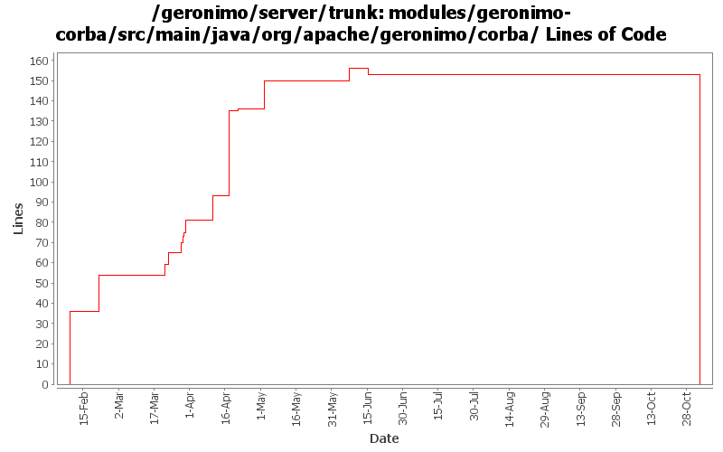

[root]/modules/geronimo-corba/src/main/java/org/apache/geronimo/corba
 proxy
(0 files, 0 lines)
proxy
(0 files, 0 lines)
 security
(0 files, 0 lines)
security
(0 files, 0 lines)
 config
(0 files, 0 lines)
config
(0 files, 0 lines)
 css
(0 files, 0 lines)
css
(0 files, 0 lines)
 ssl
(0 files, 0 lines)
ssl
(0 files, 0 lines)
 tss
(0 files, 0 lines)
tss
(0 files, 0 lines)
 jgss
(0 files, 0 lines)
jgss
(0 files, 0 lines)
 wrappers
(0 files, 0 lines)
wrappers
(0 files, 0 lines)
 transaction
(0 files, 0 lines)
transaction
(0 files, 0 lines)
 nodistributedtransactions
(0 files, 0 lines)
nodistributedtransactions
(0 files, 0 lines)
 util
(0 files, 0 lines)
util
(0 files, 0 lines)

| Author | Changes | Lines of Code | Lines per Change |
|---|---|---|---|
| Totals | 86 (100.0%) | 243 (100.0%) | 2.8 |
| rickmcguire | 28 (32.6%) | 192 (79.0%) | 6.8 |
| dain | 28 (32.6%) | 36 (14.8%) | 1.2 |
| dblevins | 1 (1.2%) | 14 (5.8%) | 14.0 |
| akulshreshtha | 1 (1.2%) | 1 (0.4%) | 1.0 |
| prasad | 28 (32.6%) | 0 (0.0%) | 0.0 |
GERONIMO-3565. Modules distributed amongst framework/modules and plugins
0 lines of code changed in 28 files:
GERONIMO-2879 setGERONIMO-2879 Set j2eeType to JTAResource for Transaction Manager in geronimo-corba, missed in last commit
1 lines of code changed in 1 file:
GERONIMO-3246 Cleanup exception handling so stack traces for first failures are not discarded.
45 lines of code changed in 11 files:
GERONIMO-3226 NPE when attempting to export an EJB without a home or remote interface via CORBA.
6 lines of code changed in 1 file:
Updated to current ApplicationServer interface
14 lines of code changed in 1 file:
Fix remove handle failures through CORBA.
2 lines of code changed in 1 file:
Handle creating proxies from the results of find* methods.
46 lines of code changed in 1 file:
Fix client ORB configuration problems that would not allow tssconfig information to be specified on the client ORB. Also propagate the TSSCONFIG information to IORs for objects published on the rootPOA.
13 lines of code changed in 2 files:
GERONIMO-3047 EJB .create() calls causing marshalling exceptions when invoked through CORBA.
6 lines of code changed in 1 file:
GERONIMO-3043 Default assembly CORBABeans cannot change listener port.
15 lines of code changed in 1 file:
GERONIMO-3042 Port of openejb corba classes was based on out-of-date original classes.
4 lines of code changed in 1 file:
GERONIMO-3037 Shutdown exception in CORBA Adapter code.
15 lines of code changed in 1 file:
GERONIMO-3001 A cleaner fix that gets the comp/ORB insertion working the way it needs to be.
14 lines of code changed in 2 files:
GERONIMO-3001 Geronimo needs to inject into the openejb3 system context the server ORB and HandleDelegate instances.
6 lines of code changed in 2 files:
GERONIMO-2682 Detect Yoko classes are not endorsed
20 lines of code changed in 4 files:
Ported CORBA implementation from OpenEJB 2
36 lines of code changed in 28 files: